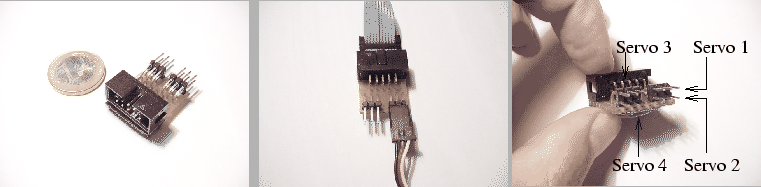

La estructura mecánica de Cube Reloaded está compuesta por
cuatro módulos Y1, conectados en fase. En la figura
![[*]](crossref.png) se muestra una foto, junto a una pluma
para hacerse una idea del tamaño. Cuando todos los módulos están en
reposo, la longitud es de 29cm y la altura y anchura de 51mm. El módulo
situado en la cola se le asigna el número 1 (el situado más a la izquierda
según se mira la foto de la figura )
y el de la cabeza el número 4.
se muestra una foto, junto a una pluma
para hacerse una idea del tamaño. Cuando todos los módulos están en
reposo, la longitud es de 29cm y la altura y anchura de 51mm. El módulo
situado en la cola se le asigna el número 1 (el situado más a la izquierda
según se mira la foto de la figura )
y el de la cabeza el número 4.
Para las conexiones de los servos se ha construido una pequeña placa
pasiva que tiene 4 conectores macho de 3 pines para los servos y un
conector para cable plano de 10 vías, por el que viene la alimentación
y las señales de control de los servos de la electrónica externa.
Su aspecto se puede ver en la figura . El reducido
tamaño es debido a que se tiene que situar dentro de uno de los módulos,
pegada con velcro sobre un servo. Los cables de todos los servos se
llevan a esa placa y ahí sale un cable de bus de 10 líneas que se
conecta a la electrónica externa. Debido a que los módulos Y1 tienen
huecos en sus bases, los cables puede pasar de un módulo a otro ningún
tipo de problemas.
|
 |
En total se han construido 8 módulo Y1. Cuatro se han empleado para
construir a Cube Reloaded y hacer pruebas de locomoción.
Los otros cuatro se han empleado para conectarlos desfasados y hacer
pruebas tanto mecánicas como de control. Nos referiremos a este robot
como Cube larva, puesto que las pruebas de movimiento realizadas
daban la impresión de tratarse de una larva que estaba viva. Se puede
ver en la figura .